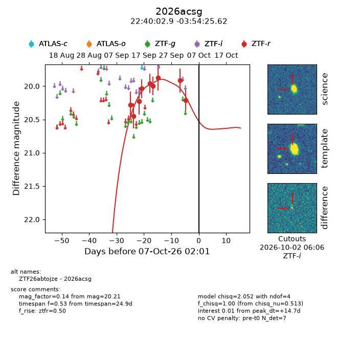
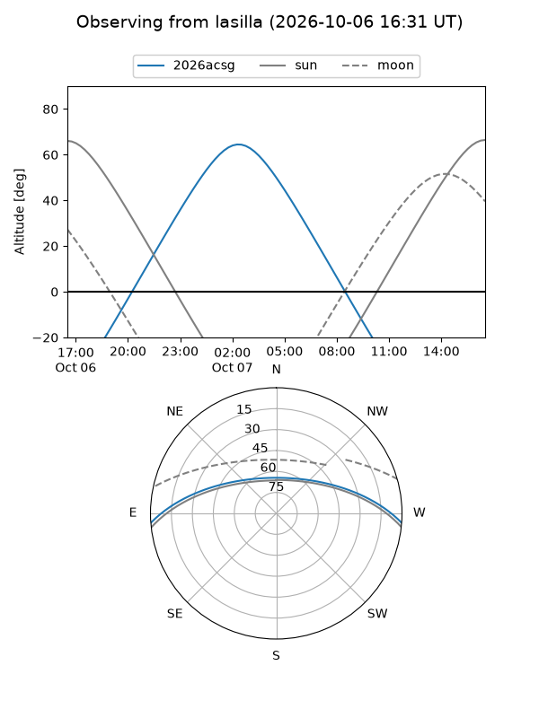
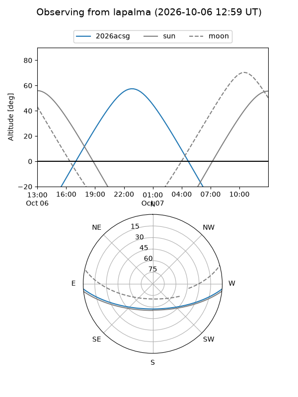
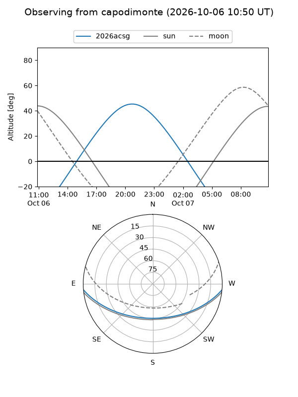
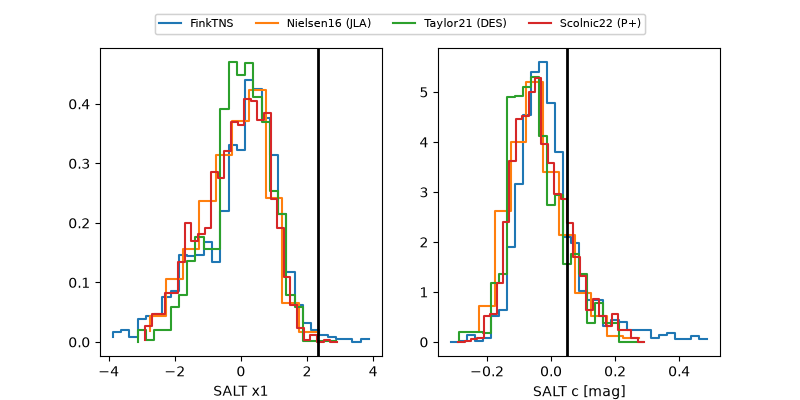

2026acsg
Target 2026acsg at 2026-10-07 02:03
Aliases and brokers:
FINK-ZTF: ztf.fink-portal.org/ZTF26abtojze
Lasair-ZTF: lasair-ztf.lsst.ac.uk/objects/ZTF26abtojze
ALeRCE-ZTF: alerce.online/object/ZTF26abtojze
YSE-PZ: ziggy.ucolick.org/yse/transient_detail/2026acsg
TNS name: wis-tns.org/object/2026acsg
Direct TNS query: direct search
alt names
ZTF26abtojze (ztf,fink_ztf)
2026acsg (tns,yse)
Coordinates:
equatorial (ra, dec) = 340.0120,-3.90712
equatorial (HMS+DMS) = 22:40:02.88,-03:54:25.62
galactic (l, b) = (63.6506,-50.98918)
Flags:
TNS type: nan
peak dt: +14.7
Photometry:
last ztfr=20.21
9 ztfr detections
Lightcurve

Visibility



Additional plots
